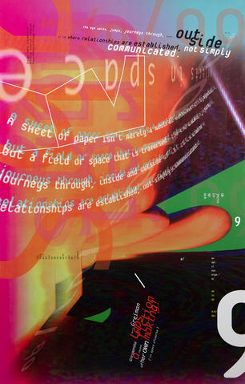

Code, letters, logic, play
*....*....*....*....*....*.....*....*....*....*....*....*....*....*....*.....*....*....*....*....*....*.....*....*....*....*.....*....*....*....*....*....*.....*....*....*....*....*....*....*....*....*.....*....*....*....*....*....*.....*....*....*

Q1. responding to prompt 2: find 1 example of design that you find fascinating and are confused as to how it was made. post a visual. describe how you think it was made. then find out how it actually was
*....*....*....*....*....*.....*....*....*....*....*....*....*....*....*.....*....*....*....*....*....*.....*....*....*....*.....*....*....*....*....*....*.....*....*....*....*....*....*....*....*....*.....*....*....*....*....*....*.....*....*....*
One of my favourite graphic designers, April Greiman, creates visual and structural abstract, vivid compositions through digital tools and methods. Her work can appear chaotic and random, but I see her work as quite structural and methodical; it maintains a sense of order while expressing exaggerated design characteristics. The piece titled “Objects in Space” appears similar in Greiman's process and outcome when examining other artworks - its loud, expressive, and suggests significant motion. The poster seems sporadic in terms of its placement, theme and typographic elements but continues to have a programmatic tone within its outcome. The composition almost mimics a glitch or error result- an occurring theme incorporated into Greiman’s work. I believe "Objects in Space" was created from excessive layering over large and small-scale elements such as type and imagery, then randomly arranged onto the canvas.
April Greiman utilizes the elements of pixelation and digitization in media to create experimental outcomes. When researching how the poster "Objects in Space" was made, it's evident how these elements of imagery, typography and traditional designs were explored. Greiman was never afraid of exploring the range of possibilities within media and digital tools. She approached these opportunities within the digital world with curiosity and openness, prominently showcasing the use of imagery, type, and colour within her graphic designs.